For, you see, so many out-of-the-way things had happened lately, that Alice had begun to think that very few things indeed were really impossible.
—Lewis C. Carol, Alice’s Adventures in Wonderland
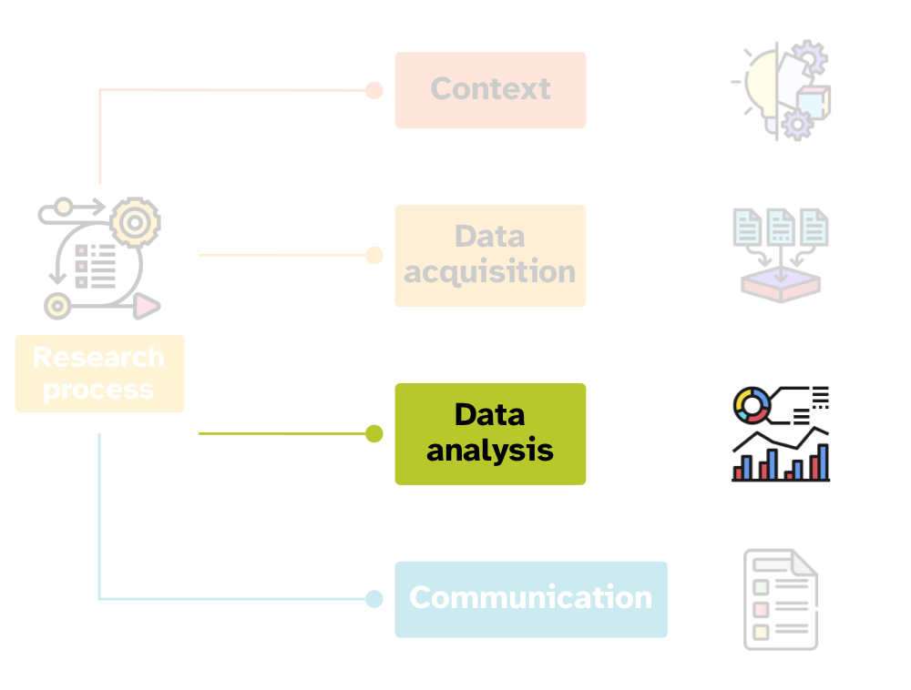
Data analysis
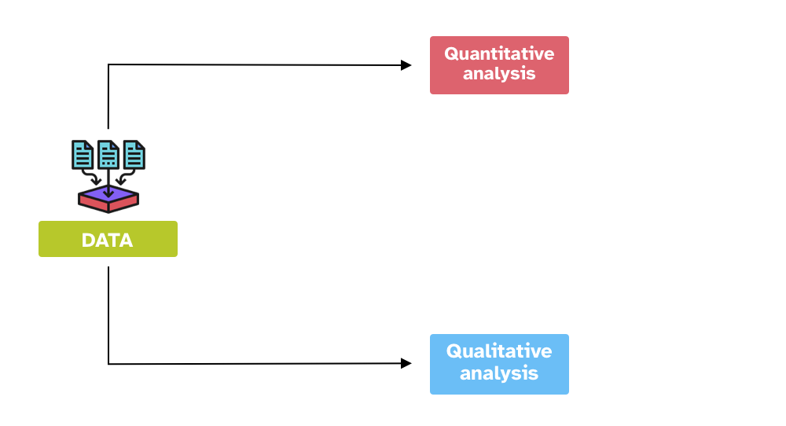
Quantitative data analysis
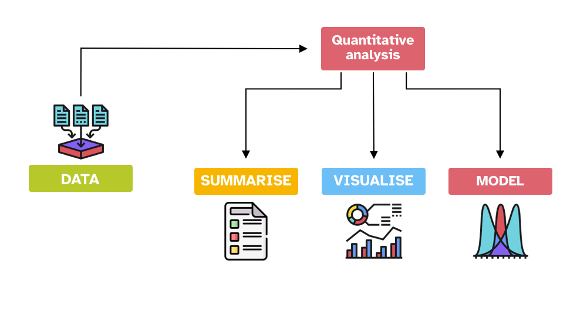
The numbers have no way of speaking for themselves. We speak for them. We imbue them with meaning.
— Nate Silver, The Signal and the Noise
Inference process
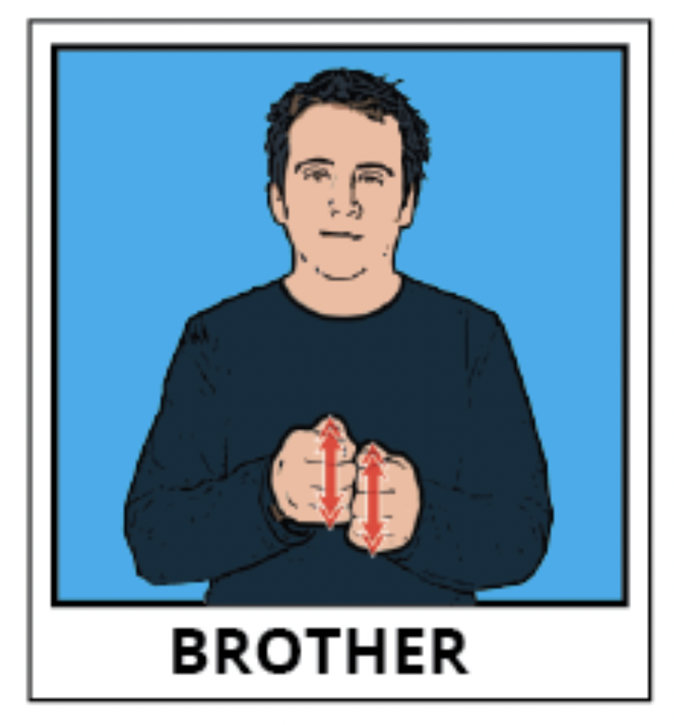
Inference process
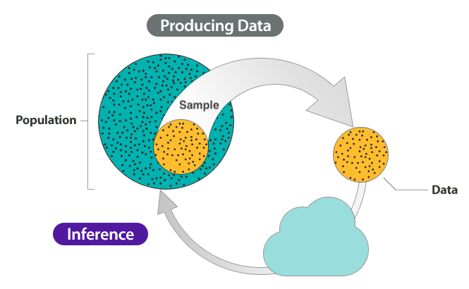
Inference is not infallible
However, inference based on data does not guarantee that the answers to our questions are right/true.
In fact, any observation we make comes with a degree of uncertainty and variability.
Uncertainty and variability
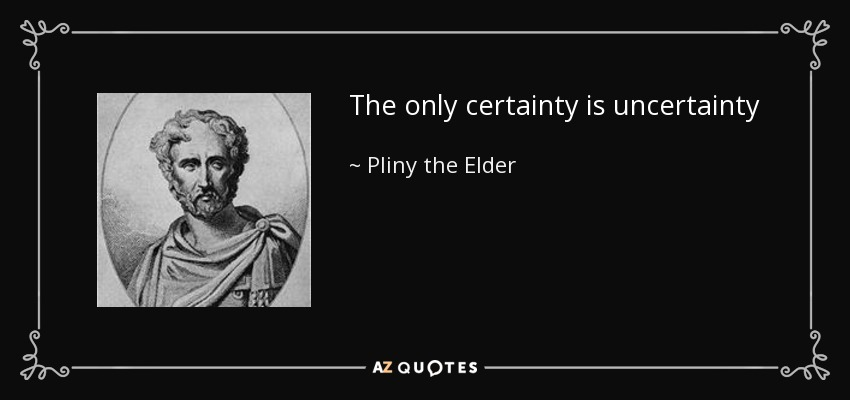
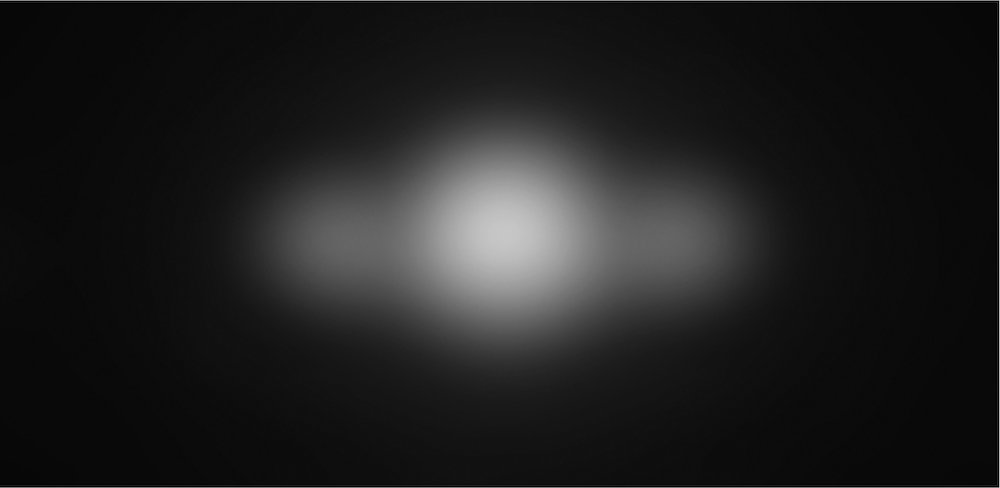
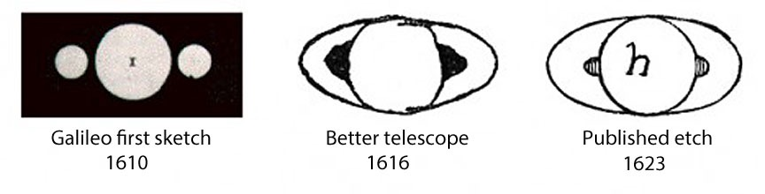
Statistics as a tool
Statistics helps us quantifying uncertainty and controlling for variability.
What is statistics?
What is statistics?
Statistics is the science concerned with developing and studying methods for collecting, analyzing, interpreting and presenting empirical data. (From UCI Department of Statistics)
Statistics is the technology of extracting information, illumination and understanding from data, often in the face of uncertainty. (From the British Academy)
Statistics is a mathematical and conceptual discipline that focuses on the relation between data and hypotheses. (From the Standford Encyclopedia of Philosophy)
Statistics as the art of applying the science of scientific methods. (From ORI Results, Nature)
Statistic is both a science and an art
It is a science in that its methods are basically systematic and have general application and an art in that their successful application depends, to a considerable degree, on the skill and special experience of the statistician, and on his knowledge of the field of application.
—L. H. C. Tippett
But… all that glisters is not gold
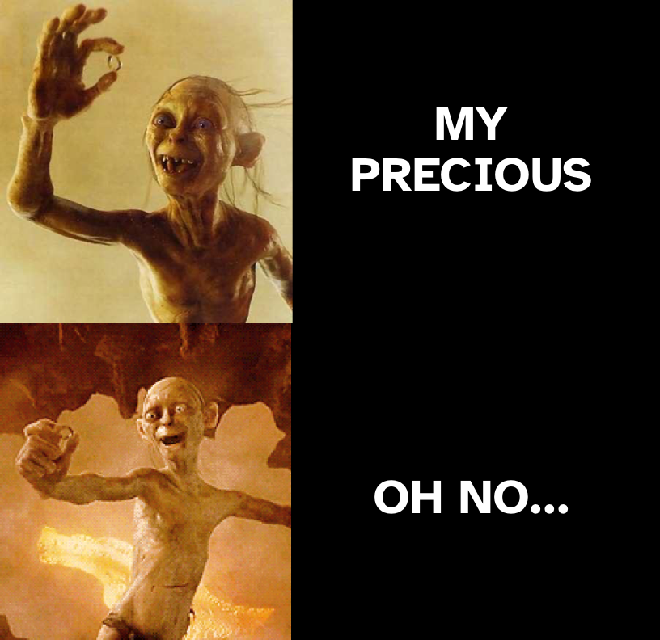
What statistics is NOT
Statistics is not maths.
Statistics is not about hard truths.
Statistics is not a purely objective endeavour.
Statistics is not a substitute of common sense and expert knowledge.
Statistics is not just \(p\)-values and significance testing.
Many Analysts, One Data Set: Silberzahn et al 2018
Is there a link between player skin tone and number of red cards in soccer?
29 independent analysis teams.
69% of the teams reported an effect, and 31% did not.
21 unique types of statistical analysis.
The observed results from analyzing a complex data set can be highly contingent on justifiable, but subjective, analytic decisions.
—Silberzahn et al 2018
Many Analysts, One Data Set: Coretta et al 2023
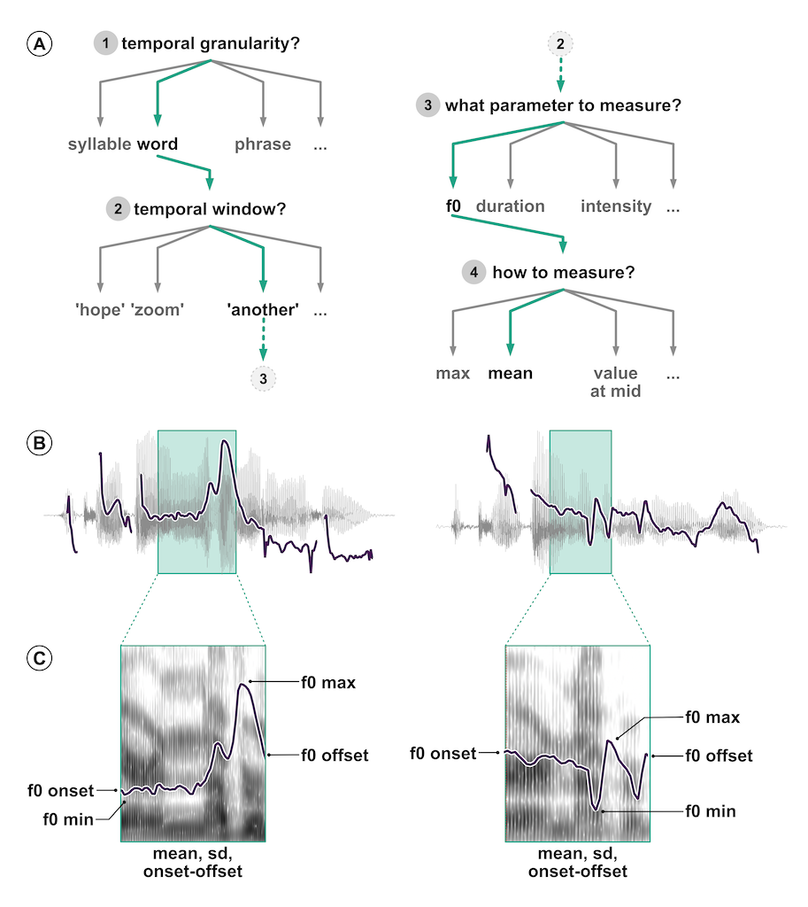
Do speakers acoustically modify utterances to signal atypical word combinations?
30 independent analysis teams (84 signed up, 46 submitted an analysis, 30 submitted usable analyses).
109 individual analyses.
52 unique measurement specifications, 47 unique model specifications.
Nine teams out of the thirty (30%) reported to have found at least one statistically reliable effect (based on the inferential criteria they specified). Of the 170 critical model coefficients, 37 were claimed to show a statistically reliable effect (21.8%).
—Coretta et al, 2023
Research process cycle
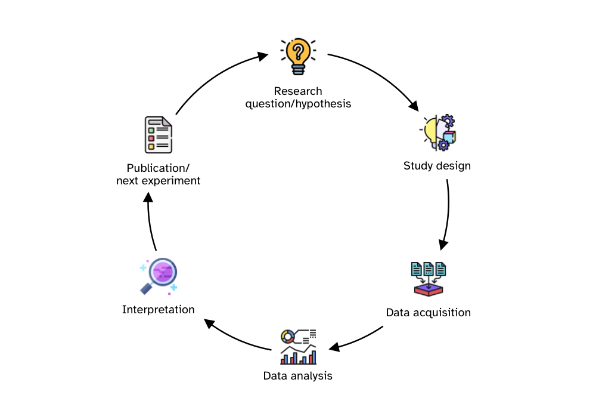
Questionable Research Practices
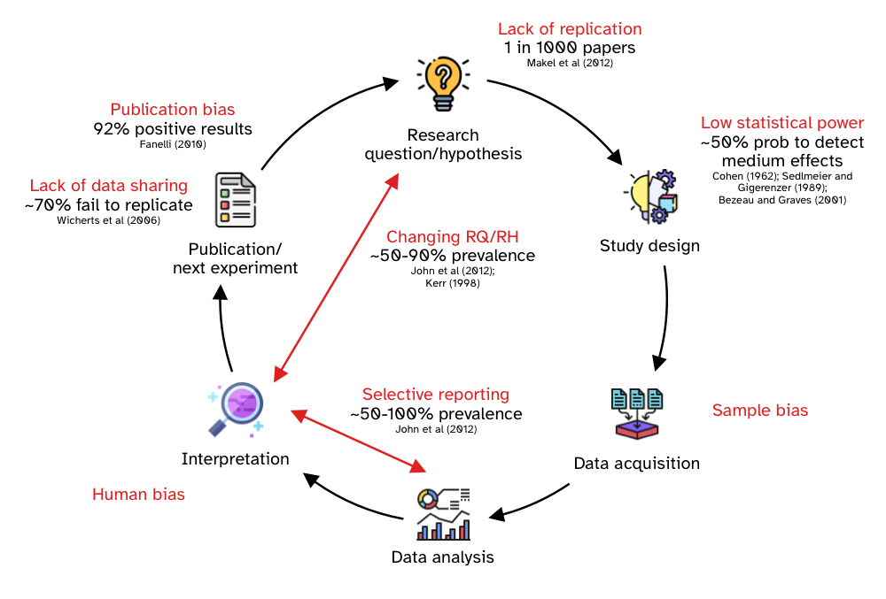
The “New Statistics”: the problem
The Silberzahn et al and Coretta et al studies are just the tip of the iceberg. We are currently facing a “research crisis”.
The New Statistics (Cumming 2014) mainly addresses three problems:
Published research is a biased selection of all (existing and possible) research.
Data analysis and reporting are often selective and biased.
In many research fields, studies are rarely replicated, so false conclusions persist.
The “New Statistics”: the solution
To help solve those problems, it proposes these solutions (among others):
Promoting research integrity.
Shifting away from statistical significance to estimation.
Building a cumulative quantitative discipline.
Two approaches to statistics
Null Hypothesis Significance Testing (NHST)
Focusses on rejecting a null (i.e. nil) hypothesis.
Based on p-values.
It cannot tell us anything about our actual hypothesis (not even if it’s a nil hypothesis).
Bayesian statistics
Focusses on estimating effects of variables on other variables, differences among groups, relationships between variables.
It allows us to estimate how confident we can be in our actual hypothesis.
To learn more, check this entry from the QML course (Hons and MSc).
Resources
Courses and workshops
Quantitative Methods in Linguistics and English Language (Hons and MSc). Materials here.